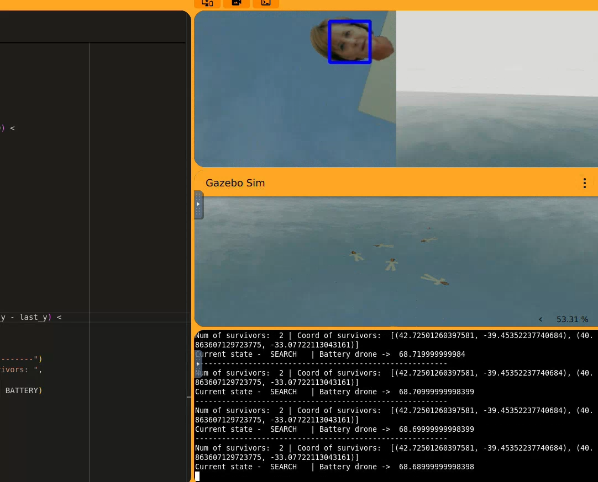

Introduction
The objective of this second practical assignment is to develop an autonomous drone capable of locating survivors at sea following an aircraft accident. Using the last known coordinates of the aircraft, the drone must systematically search the surrounding area, detect people using OpenCV's Haar Cascade classifier, avoid duplicate detections, and estimate their coordinates to guide the rescue team. Additionally, the system must manage battery consumption by returning to the rescue boat to recharge when the battery reaches a predefined threshold, then resuming the search from where it stopped.
01. Theorical Concepts
This system combines navigation, face detection, search algorithms, and battery management to perform autonomous search and rescue operations.To create the algorithm solution we needed the next theorical concepts:
Conversion of coordinates
The drone API does not support GPS coordinates directly, so it is necessary to convert them into the Universal Transverse Mercator (UTM) coordinate system, which expresses positions in meters. In this assignment, the geographical coordinates (latitude and longitude) of both the rescue boat, where the drone recharges its battery, and the survivors to be rescued are provided. These coordinates must be converted to UTM coordinates to calculate the distances and determine the positions the drone needs to reach. It is also important to consider the different coordinate frames used by the system: UTM uses the East (+X) and North (+Y) directions, while the drone's position control uses North (+X), West (+Y), and Height (+Z). In addition, UTM coordinates are global, whereas the drone's position coordinates are relative to its initial position. Velocity control uses a body-relative reference frame, where the axes represent Forward (+X), Left (+Y), and Up (+Z). Therefore, understanding these coordinate systems and their differences is essential to ensure that the drone moves in the correct direction and reaches the intended locations.
Face Detection
Face detection is implemented using the Haar Cascade classifier provided by OpenCV. This method uses a pre-trained model to identify faces in images captured by the drone's camera. It allows the system to detect survivors at sea, even when their positions and orientations vary. Additionally, the detector can identify multiple faces within a single image, helping the drone locate several survivors during its search.
03. My Algorithm
The drone implements a systematic S-shaped search algorithm to explore the designated search area and locate survivors as efficiently as possible. This approach consists of following a series of predefined waypoints arranged in parallel lines, alternating the direction of movement between consecutive lines to create a back-and-forth trajectory. This pattern allows the drone to cover the search area in an organized manner, reducing the likelihood of leaving large areas unexplored.
First, the algorithm generates a list of search points that define the drone's trajectory. In this implementation, the waypoints are distributed along the X and Y axes, with the drone alternating between moving forward and backward along each line. The initial position of the search is stored in the variables start_x and start_y, which serve as the reference point for calculating the absolute coordinates of each waypoint. This allows the search pattern to be adapted to the drone's current position when it reaches the designated search area.
The drone then follows the generated trajectory by navigating towards each waypoint using the HAL.set_cmd_pos() function. At every iteration, the algorithm calculates the distance between the drone's current position and its target position. When this distance falls below a predefined tolerance (POSITION_TOLERANCE), the drone is considered to have reached the waypoint, and the algorithm advances to the next point in the sequence. This process continues until all the waypoints have been visited or the maximum number of survivors has been detected.
While following the search pattern, the drone continuously captures images using its ventral camera. These images are processed using OpenCV's Haar Cascade classifier to detect faces. To improve detection under different orientations, the system analyzes rotated versions of the image. Additionally, a blue color filter is applied to reduce the influence of the surrounding ocean on face detection. When a face is detected, the system checks whether a survivor has already been registered nearby to avoid counting the same person multiple times. If the detection is considered new, the survivor's estimated position is stored and the total number of detected survivors is updated.
Battery management is integrated into the search process to ensure that the drone can return safely to the rescue boat. Battery consumption is simulated continuously during flight, and the system interrupts the search when the battery level falls below the predefined threshold of 30%. The drone then returns to the rescue boat's location, lands, and recharges its battery. Once the battery is fully charged, it takes off again and returns to the last recorded search position before continuing its mission. This mechanism allows the drone to resume its exploration without restarting the search pattern from the beginning.
Finally, the mission ends when all predefined search points have been visited or when the target number of survivors has been detected. Overall, this approach combines systematic area coverage, computer vision, duplicate detection, and battery management to provide an organized and autonomous search strategy for maritime rescue operations.

04. Dificulties or Problems Encountered During Development
In this section, I will explain the problems I encountered during the development of this practice, as well as some issues that I was not able to completely solve.
- I encountered some difficulties with face detection because, after implementing the initial code, some faces were not being detected. Following the professor's advice, I modified the algorithm to rotate the image several times, allowing the system to detect faces in different orientations. However, this also led to duplicate detections of the same face. To solve this issue, I implemented a method based on the drone's position to determine whether a survivor had already been detected nearby, preventing the same person from being counted multiple times.
05. Video of the algorithm
Finally, this is the video of the program. It is worth noting that the video is in fast motion.
▶ Watch the algorithm video